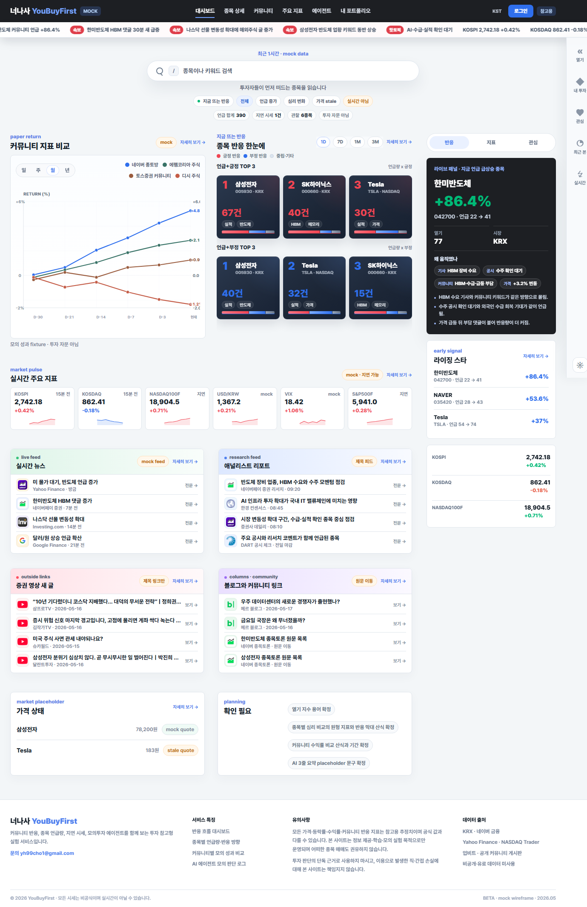
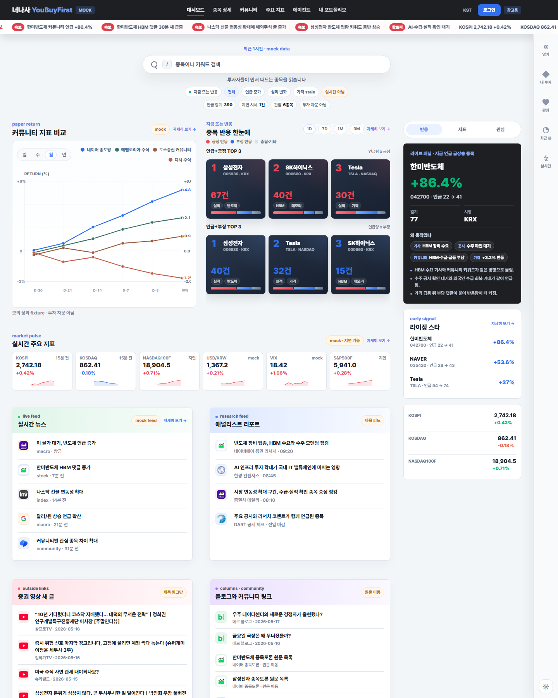
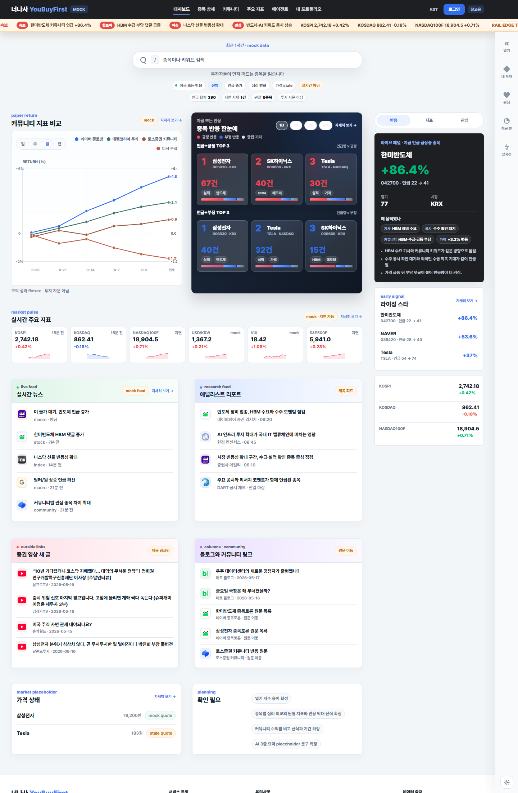
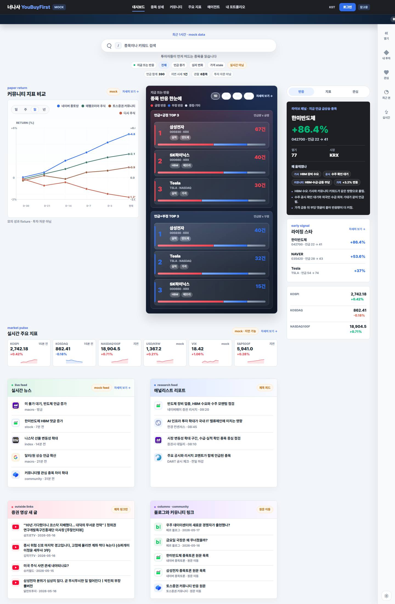
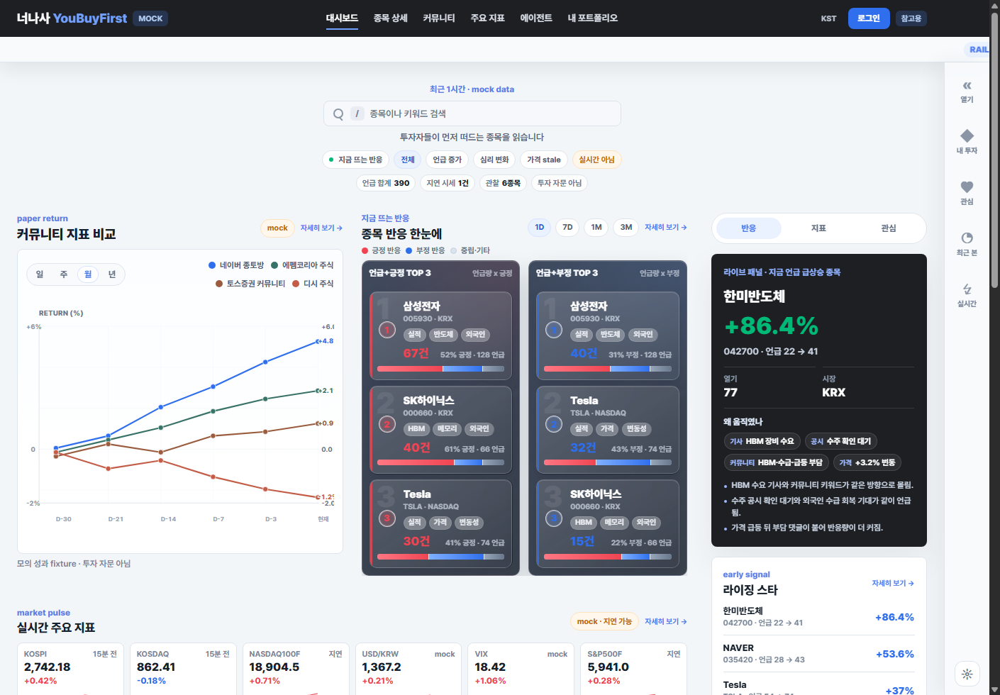

FV-20260517-1938 · 피드 카드 타이트 정리 + 동일 높이
뉴스, 리포트, 증권 영상, 블로그 링크 카드를 4행 동일 높이로 맞추고 각 행에 전문/보기 링크를 둔 버전.
원본 이미지 열기{kind=link}
artifacts/front-visual-history/FV-20260517-1938-compact-feed-cards-dashboard.png
2026-05-17에 남긴 대표 프론트 화면 캡처입니다.
이 날짜 폴더에는 비교할 대표 버전만 모읍니다. 모든 시도 캡처는 artifacts/ archive 쪽을 기준으로 봅니다.

뉴스, 리포트, 증권 영상, 블로그 링크 카드를 4행 동일 높이로 맞추고 각 행에 전문/보기 링크를 둔 버전.
원본 이미지 열기artifacts/front-visual-history/FV-20260517-1938-compact-feed-cards-dashboard.png

상단 속보 띠를 흰색 기반으로 낮추고, 종목 반응 outer box를 제거한 최신 기준.
원본 이미지 열기artifacts/front-visual-history/FV-20260517-1742-subtle-breaking-ticker-unboxed-reactions-dashboard.png

속보형 ticker, 3+3 정사각형 반응 카드, feed full width 기준.
원본 이미지 열기artifacts/front-dashboard-alert-topics-square-reactions-full-feed.png

큰 검색 pill과 큰 어두운 반응 panel을 사용하던 비교용 버전.
원본 이미지 열기artifacts/front-dashboard-search-feed-reaction-ticker-refine-2.png

검색 keycap, 커뮤니티 지표 차트 비율 유지 확대, feed header contrast 기준.
원본 이미지 열기artifacts/front-dashboard-search-natural-chart-balanced.png
{kind=link}
{kind=link}
{kind=link}
{kind=link}